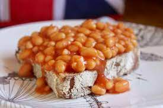

Beans On Toast

Description
A quick easy delicious recipe for people on the go!
Ingredients
- 2 slices of bread
- Butter
- Baked beans (tinned)
Method
Toast the bread
Toast the bread to your liking.Warm the beans/h3>
In the microwaveor on the hob. Just get them hot,
Butter your toast
There's nothing more to say here. Butter your toast.
Add the beans
Put the hot beans on top of your toast and serve.